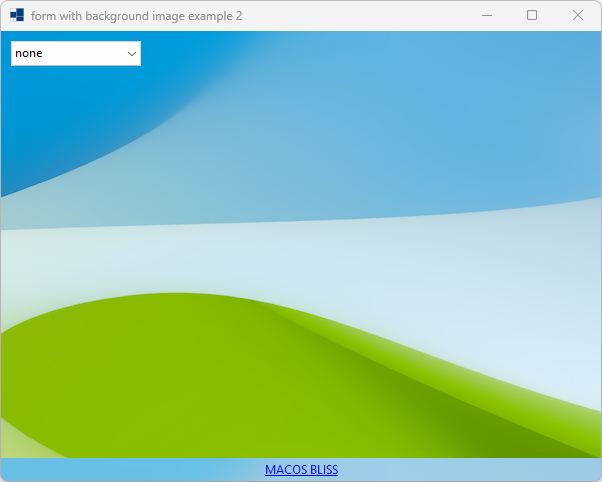
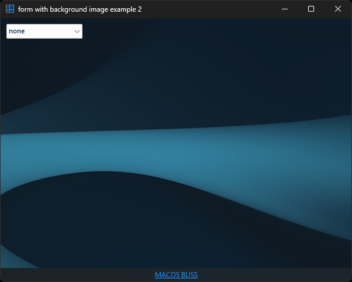
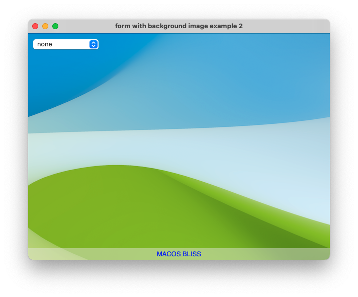
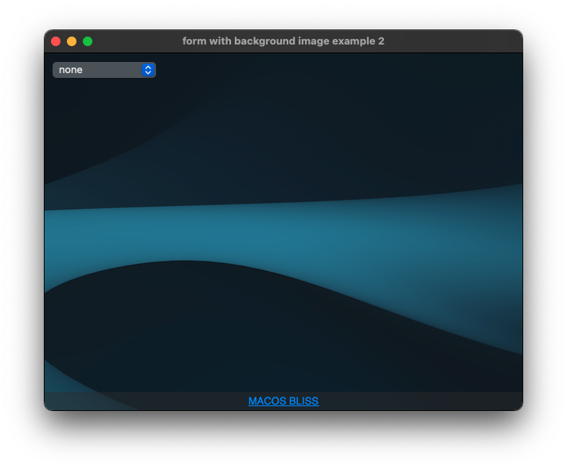
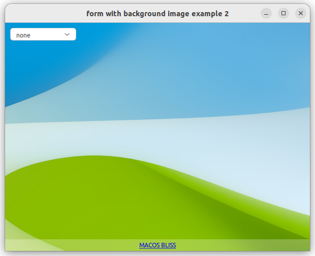
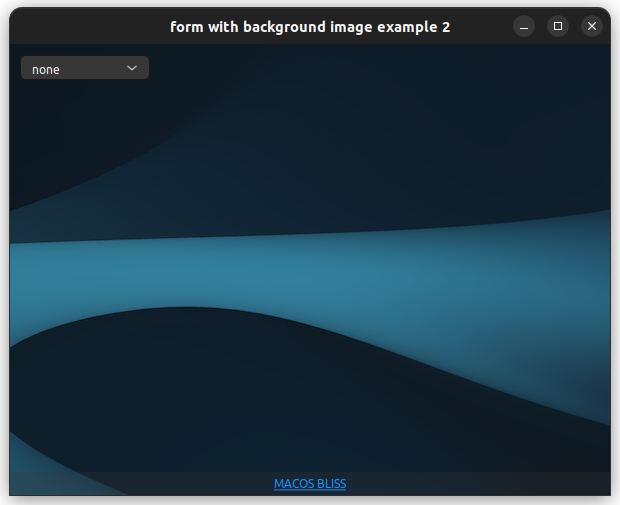

|
xtd
0.2.0
|
Loading...
Searching...
No Matches
form_background_image2.cpp
demonstrates how to use of xtd::forms::form control with background_image.
- Windows
- 

- macOS
- 

- Gnome
- 

#include <xtd/diagnostics/process>
#include <xtd/forms/application>
#include <xtd/forms/choice>
#include <xtd/forms/form>
#include <xtd/forms/link_label>
#include "../properties/resources.h"
using namespace xtd;
using namespace xtd::diagnostics;
using namespace xtd::drawing;
using namespace xtd::forms;
namespace form_background_image2 {
public:
form1() {
background_image(application::dark_mode_enabled() ? properties::resources::bliss_night() : properties::resources::bliss_day());
client_size({600, 450});
controls().push_back_range({bliss_url, image_layout_choice});
double_buffered(true);
text("form with background image example 2");
bliss_url.back_color(color::from_argb(64, system_colors::control()));
bliss_url.dock(dock_style::bottom);
bliss_url.text_align(xtd::forms::content_alignment::middle_center);
bliss_url.text("MACOS BLISS");
bliss_url.links().push_back({0, bliss_url.text().size(), "https://basicappleguy.com/basicappleblog/macosbliss"});
e.visited(true);
process::start(as<ustring>(e.link().link_data()));
};
image_layout_choice.items().push_back({name, value});
image_layout_choice.location({10, 10});
image_layout_choice.selected_index_changed += [&] {
background_image_layout(as<xtd::forms::image_layout>(image_layout_choice.selected_item().tag()));
};
image_layout_choice.selected_index(0);
}
protected:
form::on_system_colors_changed(e);
background_image(application::dark_mode_enabled() ? properties::resources::bliss_night() : properties::resources::bliss_day());
bliss_url.back_color(color::from_argb(64, system_colors::control()));
}
private:
link_label bliss_url;
choice image_layout_choice;
};
}
auto main()->int {
application::run(::form_background_image2::form1 {});
}
Represents the base class for classes that contain event data, and provides a value to use for events...
Definition event_args.h:18
Represents a window or dialog box that makes up an application's user interface.
Definition form.h:52
Represents a Windows label control that can display hyperlinks.
Definition link_label_clicked_event_args.h:27
Represents a Windows label control that can display hyperlinks.
Definition link_label.h:41
@ middle_center
Content is vertically aligned at the middle, and horizontally aligned at the center.
The xtd::diagnostics namespace provides classes that allow you to interact with system processes,...
Definition assert_dialog_result.h:10
The xtd::drawing namespace provides access to GDI+ basic graphics functionality. More advanced functi...
Definition actions_system_images.h:11
The xtd::forms namespace contains classes for creating Windows-based applications that take full adva...
Definition about_box.h:13
The xtd namespace contains all fundamental classes to access Hardware, Os, System,...
Definition system_report.h:17
Generated on Wed Sep 27 2023 09:42:28 for xtd by Gammasoft. All rights reserved.